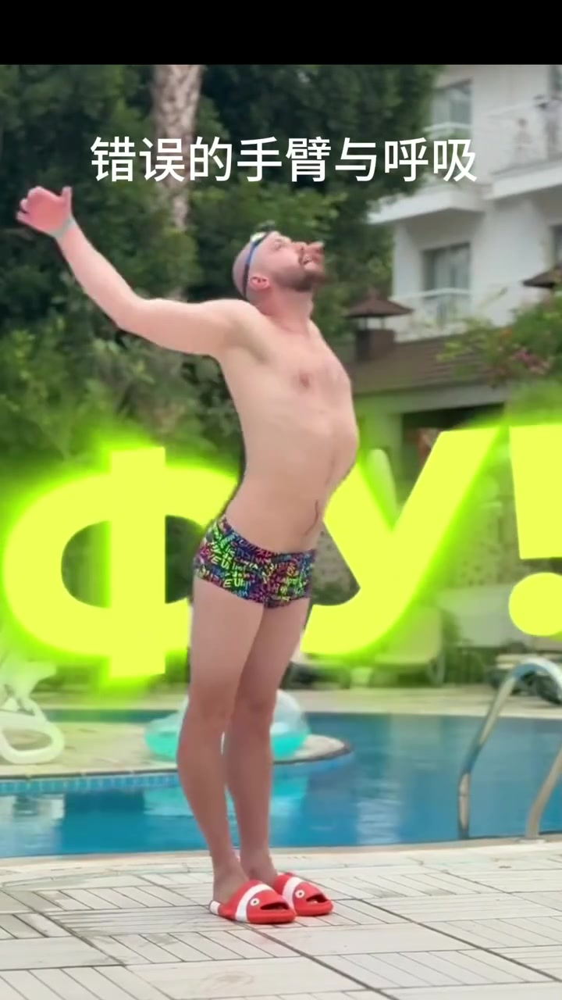
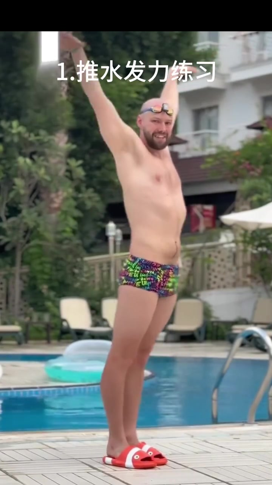
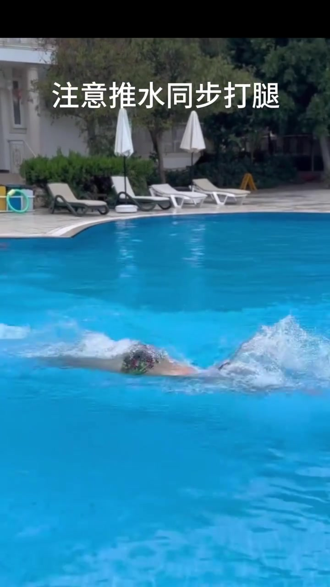
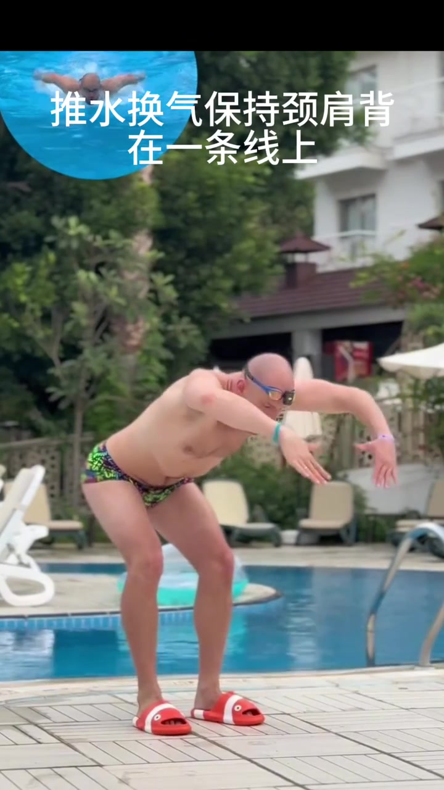
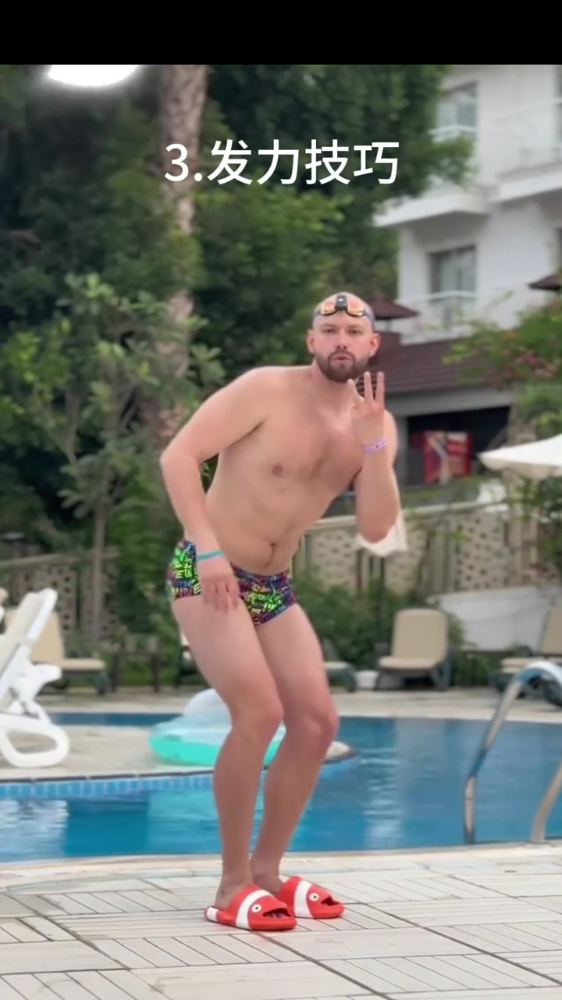
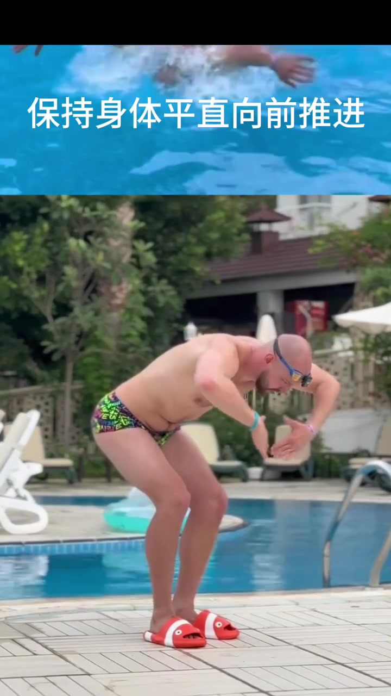
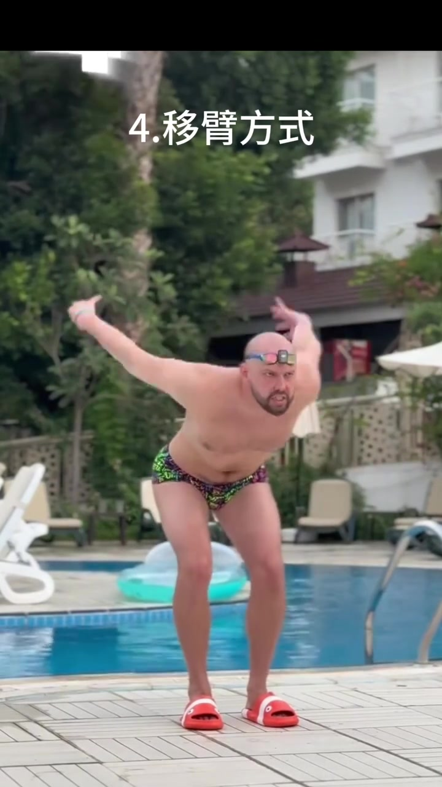
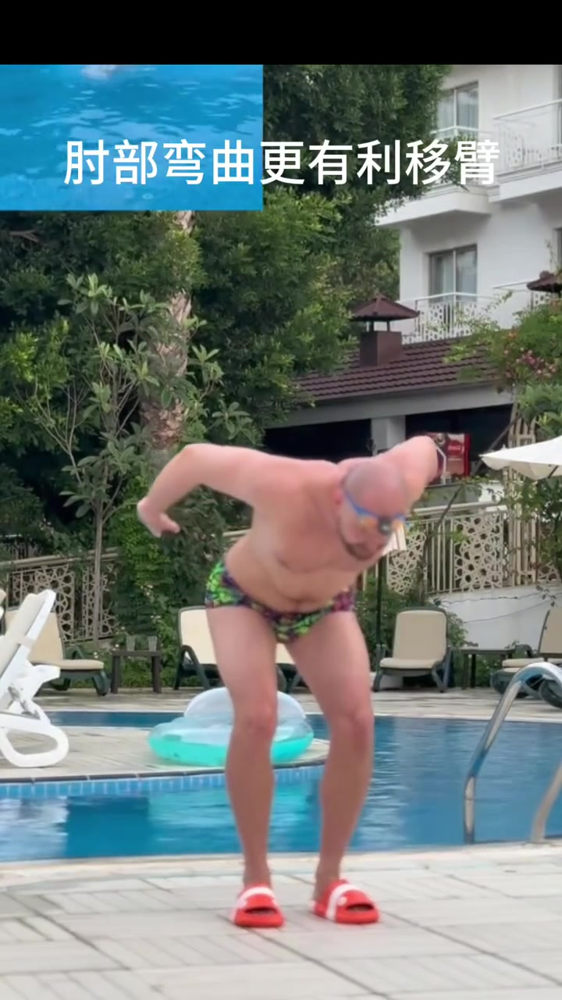

01
中文
开场是反面案例：错误的手臂与呼吸。
EN
The opening is a counter-example: wrong arms and breathing.
表达提示counter-example（反面案例）

Scene English · 游泳 · 蝶泳
Moscow Swim Lesson: Butterfly Arms and Breathing
🎧 语音讲解
The Wrong Way: Arms and Breathing
情境开场展示反面案例：错误的手臂与呼吸，配俄语感叹词「ФУ!」（不行/糟糕）。教练指出常见的蝶泳错误示范。
开场是反面案例：错误的手臂与呼吸。
The opening is a counter-example: wrong arms and breathing.
表达提示counter-example（反面案例）
配俄语感叹词「ФУ!」，表示不行、糟糕。
It comes with the Russian exclamation “ФУ!”—no, ugh.
表达提示exclamation（感叹词）
counter-example（反面案例
exclamation（感叹词

On-Deck Drill: Pull Power
情境教练带学员做岸上模拟：推水发力练习。通过陆上动作感受蝶泳推水的发力方式，再带入水中。
先在岸上模拟，练习推水发力。
First simulate on deck: the pulling-power drill.
表达提示simulate（模拟）
找到发力感，再带入水中。
Find the power feel, then take it into the water.
表达提示power feel（发力感）
simulate（模拟
power feel（发力感

The Breath Moment: Sync Kick With Pull
情境水中实拍换气瞬间，字幕提示「注意推水同步打腿」。蝶泳换气要配合推水和打腿的节奏，形成整体动作。
换气瞬间要同步打腿。
At the breath, sync the kick with the pull.
表达提示sync（同步）
推水和打腿形成整体节奏。
The pull and kick become one rhythm.
表达提示rhythm（节奏）
sync（同步
rhythm（节奏

Correct Breathing Posture
情境岸上模拟正确换气姿态，字幕「推水换气保持颈肩背在一条线上」。换气时身体要像钢板一样整体转动，而不是抬头。
推水换气时，颈肩背保持一条线。
During the pull and breath, keep neck, shoulders and back in one line.
表达提示in one line（一条线）
像钢板一样整体转动，不要抬头。
Rotate as one plank—never lift the chin.
表达提示plank（钢板）
in one line（一条线
plank（钢板

Power Trick: The “3”
情境岸上模拟发力技巧，教练比出数字「3」，强调推水发力的时机与力度，让换气前的最后一推更有力。
教练比出数字「3」，强调发力时机。
The coach holds up “3” to cue the power timing.
表达提示cue（提示）
最后一推要有力，帮助身体出水。
The final push must be strong to lift the body out.
表达提示lift out（带出水面）
cue（提示
lift out（带出水面

Stay Flat and Drive Forward
情境水中实拍叠加岸上示范，字幕「保持身体平直向前推进」。身体不要上下起伏太大，保持平直向前。
保持身体平直，向前推进。
Keep the body flat and drive forward.
表达提示drive forward（向前推进）
减少上下起伏，保存体力。
Less bobbing saves your energy.
表达提示bob（起伏）
drive forward（向前推进
bob（起伏

Recovery Style: The “4”
情境岸上模拟移臂方式，教练比出数字「4」，强调移臂要屈肘、低平，避免甩臂过直造成肩部疲劳。
移臂方式也有讲究，比出数字「4」。
Even the recovery has a cue—the “4”.
表达提示recovery（移臂）
屈肘低平移臂，避免肩部疲劳。
Bend the elbow and stay low to spare your shoulders.
表达提示spare（省着用）
recovery（移臂
spare（省着用

Bent Elbow Wins the Recovery
情境字幕「肘部弯曲更有利移臂」。屈肘移臂让手更贴近水面滑行，减小空气阻力与肩膀负担，是蝶泳高效移臂的关键。
肘部弯曲更有利于移臂。
Bending the elbow helps the recovery.
表达提示bent elbow（屈肘）
手贴近水面滑行，肩部负担更小。
Sliding low keeps the load off your shoulder.
表达提示shoulder load（肩部负担）
bent elbow（屈肘
shoulder load（肩部负担
说推水换气同步
说颈肩背一条线
说身体平直推进
说屈肘移臂
抬头换气会让身体断成两截
推水不到位，换气就顶不上去
直臂甩臂会累到肩膀
换气时不打腿，动作断节